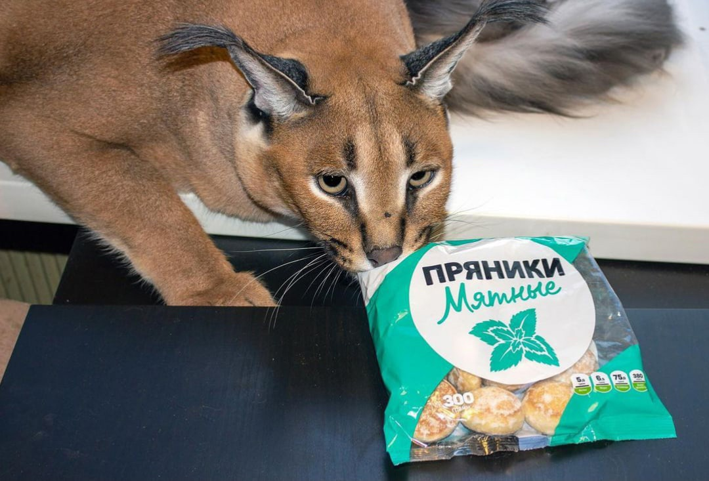
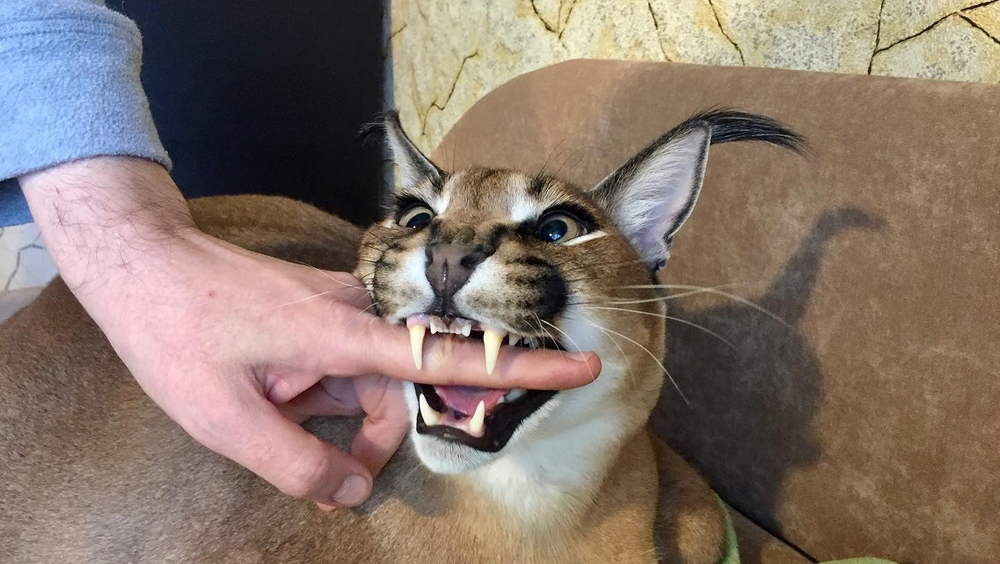

Минимум два раза в год каракала нужно возить к ветеринару на осмотр и не пропускать вакцинацию от бешенства и других заболеваний. Дикие коты болеют редко, однако если это всё-таки произошло, самостоятельно лечить ни в коем случае нельзя. Также важно вычесывать животное раз в неделю, чтобы оно не заглатывало шерсть и не заработало проблемы с желудком. Чтобы не нарваться на больного каракала, важно купить его у заводчиков с лицензией на разведение. При покупке питомник должен выдать ветеринарный паспорт со всеми прививками, ветеринарный сертификат, сертификат CITES, а также договор купли-продажи, акт приема-передачи и микрочип(ЧХЗ? Шлёпа способен дистанционно общаться с Биллом Гейтсом?).
 Хищник не любит холод, поэтому его комната в доме должна быть тёплой. Он очень ревностно охраняет выделенную ему территорию, но при этом легко находит общий язык с другими домашними животными (однако птиц и грызунов в доме, где живёт каракал, лучше не держать - они для него добыча) Ест такая дикая кошка в три раза больше обычной. В её рационе должны быть: свежая курятина, индейка, говядина или варёное мясо (а также пельмени и пряники). А вот сырую свинину каракалу давать нельзя. Животное может подхватить болезнь Ауески (инфекционный паралич). Кроме того, нельзя кормить каракала крупами, супами, молоком и копчеными деликатесами. Ничего полезного для животного в них нет. К мясу можно добавлять только овощи: капусту, тыкву, морковь, кабачок. Изредка можно побаловать кота кисломолочными продуктами и куриными яйцами. Кормить каракала нужно 2 раза в день, в одно и то же время, а также следить, чтобы миска с водой всегда была полна. Раз в неделю каракалу устраивают разгрузочный день (совсем без пищи).
Воспитание каракалов правильно начинать с 3-4 месяцев. За лакомство они, так же, как и собаки, могут приносить игрушки. С раннего возраста нужно приучать кота к когтеточке, чтобы избежать порчи мебели. Если не уделять каракалу внимания, то гены хищника будут проявляться очень часто. Потому следует воспитывать его каждодневно и окружать вниманием и любовью. Это сделает животное ласковым и покладистым. Однако если в доме есть маленькие дети, не стоит заводить дикого кота. Он не любит навязчивого внимания (особенно от налоговых инспекторов). Малыши, например, могут дернуть каракала за хвост, на что он, вполне вероятно, отреагирует агрессивно. Специалисты рекомендуют брать котенка, когда детям уже исполнилось 10 лет. При этом важно объяснять, что кот может дать сдачи, если использовать его как игрушку(или забыть покормить). Во время прогулок на поводке на каракала лучше надевать намордник, так как к чужим он относится не очень приветливо.
